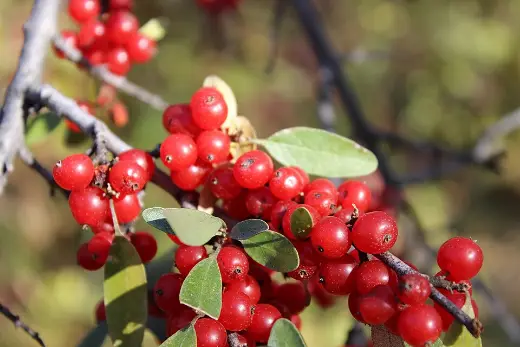

Desserts · Popular in British Columbia and The North
Soapberry whip (sxusem)
Soapberry whip (sxusem) is made with wild soapberry, a favourite in British Columbia and The North.

How do you make soapberry whip (sxusem)?
Soapberries whipped with water and a little sugar into a pink foam.
Wild ingredients
- Soapberry (Shepherdia canadensis): in season July to August
Watch the recipe

Video: yukonsenergyfuture on YouTube